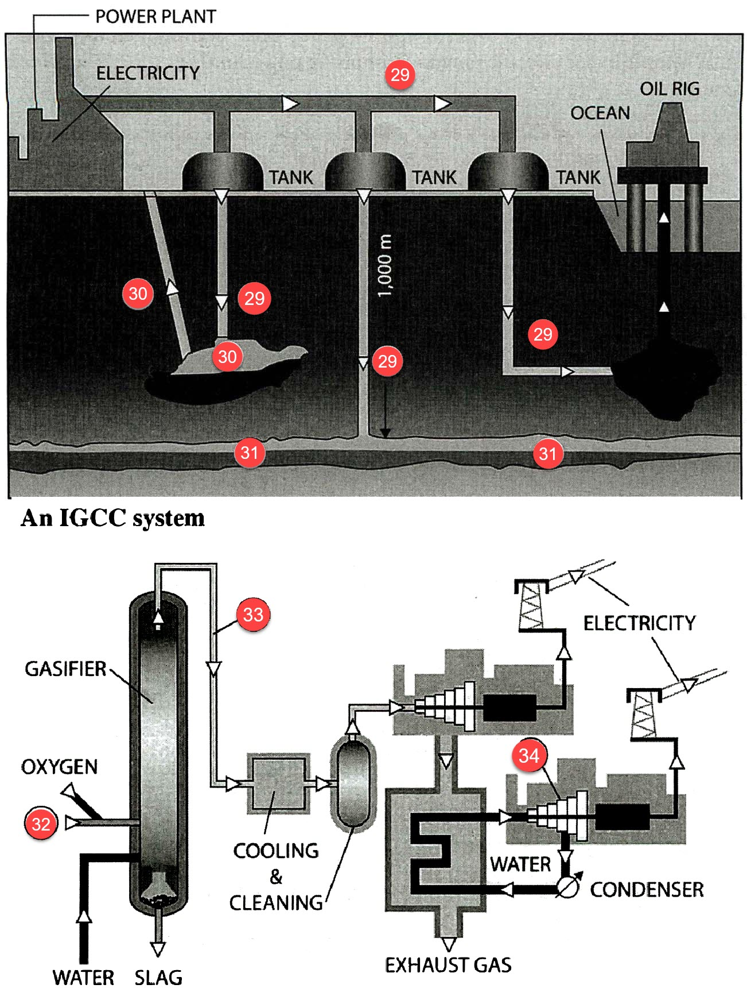

Part 1
READING PASSAGE 1
You should spend about 20 minutes on Questions 1-13, which are based on Reading Passage 1 below.

Light pollution
{A} If humans were truly at home under the light of the moon and stars, we would go into darkness happily, the midnight world as visible to us as it is to the vast number of nocturnal species on this planet. Instead, we are diurnal creatures, with eyes adapted to living in the sun’s light. This is a basic evolutionary fact, even though most of us don’t think of ourselves as diurnal beings any more than we think of ourselves as primates or mammals, or Earthlings. Yet it’s the only way to explain what we’ve done to the night: We’ve engineered it to receive us by filling it with light.
{B} This kind of engineering is no different than damming a river. Its benefits come with consequences—called light pollution—whose effects scientists are only now beginning to study. Light pollution is largely the result of bad lighting design, which allows artificial light to shine outward and upward into the sky, where it’s not wanted, instead of focusing it downward, where it is. Ill-designed lighting washes out the darkness of night and radically alters the light levels and light rhythms—to which many forms of life, including ourselves, have adapted.
{C} Now most of humanity lives under intersecting domes of reflected, refracted light, of scattering rays from overlit cities and suburbs, from light-flooded highways and factories. Nearly all of nighttime Europe is a nebula of light, as is most of the United States and all of Japan. In the south Atlantic the glow from a single fishing fleet squid fishermen during their prey with metal halide lamps—can be seen from space, burning brighter, in fact, than Buenos Aires or Rio de Janeiro.
{D} We’ve lit up the night as if it were an unoccupied country when nothing could be further from the truth. Among mammals alone, the number of nocturnal species is astonishing. Light is a powerful biological force, and in many species, it acts as a magnet, a process being studied by researchers such as Travis Longcore and Catherine Rich, co-founders of the Los Angeles-based Urban Wildlands Group. The effect is so powerful that scientists speak of songbirds and seabirds being “captured” by searchlights on land or by the light from gas flares on marine oil platforms, circling and circling in the thousands until they drop. Migrating at night, birds are apt to collide with brightly lit tall buildings; immature birds on their first journey suffer disproportionately.
{E} Insects, of course, cluster around streetlights, and feeding at those insect clusters is now ingrained in the lives of many bat species. In some Swiss valleys, the European lesser horseshoe bat began to vanish after streetlights were installed, perhaps because those valleys were suddenly filled with light-feeding pipistrelle bats. Other nocturnal mammals—including desert rodents, fruit bats, opossums, and badgers-forage more cautiously under the permanent full moon of light pollution because they’ve become easier targets for predators.
{F} Some birds—blackbirds and nightingales, among others—sing at unnatural hours in the presence of artificial light. Scientists have determined that long artificial days— and artificially short nights induce early breeding in a wide range of birds. And because a longer day allows for longer feeding, it can also affect migration schedules. One population of Bewick’s swans wintering in England put on fat more rapidly than usual, priming them to begin their Siberian migration early. The problem, of course, is that migration, like most other aspects of bird behaviour, is a precisely timed biological behaviour. Leaving early may mean arriving too soon for nesting conditions to be right
{G} Nesting sea turtles, which show a natural predisposition for dark beaches, find fewer and fewer of them to nest on. Their hatchlings, which gravitate toward the brighter, more reflective sea horizon, find themselves confused by artificial lighting behind the beach. In Florida alone, hatchling losses number in the hundreds of thousands every year. Frogs and toads living near brightly lit highways suffer nocturnal light levels that are as much as a million times brighter than normal, throwing nearly every aspect of their behaviour out of joint, including their nighttime breeding choruses.
{H} Of all the pollution we face, light pollution is perhaps the most easily remedied. Simple changes in lighting design and installation yield immediate changes in the amount of light spilt into the atmosphere and, often, immediate energy savings.
{I} It was once thought that light pollution only affected astronomers, who need to see the night sky in all its glorious clarity. And, in fact, some of the earliest civic efforts to control light pollution—in Flagstaff, Arizona, half a century ago—were made to protect the view from Lowell Observatory, which sits high above that city. Flagstaff has tightened its regulations since then, and in 2001 it was declared the first International Dark Sky City. By now the effort to control light pollution has spread around the globe. More and more cities and even entire countries, such as the Czech Republic, have committed themselves to reducing unwanted glare.
{J} Unlike astronomers, most of us may not need an undiminished view of the night sky for our work, but like most other creatures we do need darkness. Darkness is as essential to our biological welfare, to our internal clockwork, as light itself. The regular oscillation of waking and sleep in our lives, one of our circadian rhythms—is nothing less than a biological expression of the regular oscillation of light on Earth. So fundamental are these rhythms to our being that altering them is like altering gravity.
Part 2
READING PASSAGE 2
You should spend about 20 minutes on Questions 14-26, which are based on Reading Passage 2 below.

Lighting up the lies
A Last year Sean A. Spence, a professor at the school of medicine at the University of Sheffield in England, performed brain scans that showed that a woman convicted of poisoning a child in her care appeared to be telling the truth when she denied committing the crime. This deception study, along with two others performed by the Sheffield group, was funded by Quickfire Media, a television production company working for the U.K.’s Channel 4, which broadcast videos of the researchers at work as part of a three-part series called “Lie Lab.” The brain study of the woman later appeared in the journal European Psychiatry.
B Functional magnetic resonance imaging (fMRI) purports to detect mendacity by seeing inside the brain instead of tracking peripheral measures of anxiety—such as changes in pulse, blood pressure or respiration —measured by a polygraph. Besides drawing hundreds of thousands of viewers, fMRI has pulled in entrepreneurs. Two companies—Cephos in Pepperell, Mass., and No Lie MRI in Tarzana, Calif.—claim to predict with 90 percent or greater certitude whether you are telling the truth. No Lie MRI, whose name evokes the casual familiarity of a walk-in dental clinic in a strip mall, suggests that the technique may even be used for “risk reduction in dating” .
C Many neuroscientists and legal scholars doubt such claims—and some even question whether brain scans for lie detection will ever be ready for anything but more research on the nature of deception and the brain. An fMRI machine tracks blood flow to activated brain areas. The assumption in lie detection is that the
brain must exert extra effort when telling a lie and that the regions that do more work get more blood. Such areas light up in scans; during the lie studies, the illuminated regions are primarily involved in decision making.
D To assess how fMRI and other neurocience findings affect the law, the Mac- Arthur Foundation put up $10 million last year to pilot for three years the Law and Neuroscience Project. Part of the funding will attempt to set criteria for accurate and reliable lie detection using fMRI and other brain-scanning technology. “I think it’s not possible, given the current technology, to trust the results,” says Marcus Raichle, a neuroscientist at the Washington University School of Medicine in St. Louis who heads the project’s study group on lie detection. “But it’s not impossible to set up a research program to determine whether that’s possible.” A major review article last year in the American Journal of Law and Medicine by Henry T. Greely of Stanford University and Judy Illes, now at the University of British Columbia, explores the deficiencies of existing research and what may be needed to move the technology forward. The two scholars found that lie detection studies conducted so far (still less than 20 in all) failed to prove that fMRI is “effective as a lie detector in the real world at any accuracy level.”
Most studies examined groups, not individuals.Subjects in these studies were healthy young adults—making it unclear how the results would apply to someone who takes a drug that affects blood pressure or has a blockage in an artery. And the two researchers questioned the specificity of the lit-up areas; they noted that the regions also correlate with a wide range of cognitive behaviors, including memory, self- monitoring and conscious self-awareness.
The biggest challenge for which the Law and Neuroscience Project is already funding new research—is how to diminish the artificiality of the test protocol. Lying about whether a playing card is the seven of spades may not activate the same areas of the cortex as answering a question about whether you robbed the comer store. In fact, the most realistic studies to date may have come from the Lie Lab television programs. The two companies marketing the technology are not waiting for more data. Cephos is offering scans without charge to people who claim they were falsely accused if they meet certain criteria in an effort to get scans accepted by the courts. Allowing scans as legal evidence could open a potentially huge and lucrative market. “We may have to take many shots on goal before we actually see a courtroom,” says Cephos chief executive Steven
Laken. He asserts that the technology has achieved 97 percent accuracy and that the more than 100 people scanned using the Cephos protocol have provided data that have resolved many of the issues that Greely and Illes cited.
G But until formal clinical trials prove that the machines meet safety and effectiveness criteria, Greely and Illes have called for a ban on non-research uses. Trials envisaged for regulatory approval hint at the technical challenges. Actors, professional poker players and sociopaths would be compared against average Joes. The devout would go in the scanner after nonbelievers. Testing would take into account social setting. White lies—“no, dinner really was fantastic”—would have to be compared against untruths about sexual peccadilloes to ensure that the brain reacts identically.
H There potential for abuse prompts caution. “The danger is that people’s lives can be changed in bad ways because of mistakes in the technology,” Greely says.
“The danger for the science is that it gets a black eye because of this very high profile use of neuroimaging that goes wrong.” Considering the long and controversial history of the polygraph, gradualism may be the wisest course to follow for a new diagnostic that probes an essential quality governing social interaction.
Part 3
READING PASSAGE 3
You should spend about 20 minutes on Questions 27-40, which are based on Reading Passage 3 below.

Carbon Capture and Storage
High coal dependence
Renewable energy is much discussed, but coal still plays the greatest role in the generation of electricity, with recent figures from the International Energy Agency showing that China relies on it for 79% of its power, Australia for 78%, and the US for 45%. Germany has less reliance at 41%, which is also the global average. Furthermore, many countries have large, easily accessible deposits of coal, and numerous highly skilled miners, chemists, and engineers. Meanwhile, 70% of the world’s steel production requires coal, and plastic and rayon are usually coal derivatives.
Currently, coal-fired power plants fed voracious appetites, but they produce carbon dioxide (CO2) in staggering amounts. Urbanites may grumble about an average monthly electricity bill of $113, yet they steadfastly ignore the fact that they are not billed for the 6-7 million metric tons of CO2 their local plant belches out, which contribute to the 44% of global CO2 levels from fossil-fuel emissions. Yet, as skies fill with smog and temperatures soar, people crave clean air and cheap power.
The Intergovernmental Panel on Climate Change that advises the United Nations has testified that the threshold of serious harm to the Earth’s temperature is a mere 2° Celsius above current levels, so it is essential to reduce carbon emissions by 80% over the next 30 years, even as demand for energy will rise by 50%, and one proposal for this is the adoption of carbon capture and storage (CCS).
Underground carbon storage
Currently, CO2 storage, or sequestration as it is known, is practised by the oil and gas industry, where CO2 is pumped into oil fields to maintain pressure and ease extraction – one metric ton dissolves out about three barrels, or separated from natural gas and pumped out of exhausted coal fields or other deep seams. The CO2 remains underground or is channelled into disused sandstone reservoirs. However, the sale of oil and natural gas is profitable, so the $17-per-ton sequestration cost is easily borne. There is also a plan for the injection of CO2 into saline aquifers, 1,000 metres beneath the seabed, to prevent its release into the atmosphere.
Carbon capture
While CO2 storage has been accomplished, its capture from power plants remains largely hypothetical, although CCS plants throughout Western Europe and North America are on the drawing board.
There are three main forms of CCS: pre-combustion, post-combustion, and oxy-firing. In a 2012 paper from the US Congressional Budget Office (CBO), post-combustion capture was viewed most favourably since existing power plants can be retrofitted with it, whereas pre-combustion and oxy-firing mean the construction of entirely new plants. However, pre-combustion and oxy-firing remove more CO2 than post-combustion and generate more electricity.
Post-combustion capture means CO2 is separated from gas after coal is burnt but before electricity is generated, while in oxy-firing, coal is combusted in pure oxygen. In pre-combustion, as in an Integrated Gasification Combined Cycle system (IGCC), oxygen, coal, and water ae burnt together to produce a synthetic gas called Syngas – mainly hydrogen – which drives two sets of turbines, firstly gas-driven ones, then, as the cooling Syngas travel through water, steam-driven ones. Emissions from this process contain around ten percent of the CO2 that burning coal produces.
The pros and cons of CCS
Several countries are keen to scale up CCS as it may reduce carbon emissions quickly, and powerful lobby groups for CCS exist among professionals in mining and engineering. Foundries and refineries that produce steel and emit carbon may also benefit, and the oil and gas industry is interested because power-plant equipment consumes their products. In addition, recent clean energy acts in many countries mandate that a percentage of electricity be generated by renewables or by more energy-efficient systems, like CCS.
As with desalination, where powerful lobbies wield influence, states sometimes find it easier to engage in large projects involving a few players rather than change behaviours on a more scattered household scale. Furthermore, replacing coal with zero-emission photovoltaic (PV) cells to produce solar energy would require covering an area nearly 20,720 square kilometres, roughly twice the size of Lebanon or half of Denmark.
Still, there are many reservations about CCS. Principally, it is enormously expensive: conservative estimates put the electricity it generates at more than five times the current retail price. As consumers are unlikely to want to bear this price hike, massive state subsidies would be necessary for CCS to work.
The capital outlay of purchasing equipment for retrofitting existing power plants is high enough, but the energy needed to capture CO2 means one third more coal must be burnt, and building new CCS plants is at least 75% more expensive than retro-fitting.
Some CCS technology is untried, for example, the Syngas-driven turbines in an IGCC system have not been used on an industrial scale. Post capture, CO2 must be compressed into a supercritical liquid for transport and storage, which is also costly. The Qatar Carbonates and Carbon Storage Research Centre predicts 700 million barrels per day of this liquid would be produced if CCS were adopted modestly. It is worth noting that current oil production is around 85 million barrels per day, so CCS would produce eleven times more waste for burial than oil that was simultaneously being extracted.
Sequestration has been used successfully, but there are limited coal and oil fields where optimal conditions exist. In rock that is too brittle, earthquakes could release the CO2. Moreover, proposals to store CO2 in saline aquifers are just that – proposals: sequestration has never been attempted in aquifers.
Most problematic of all, CCS reduces carbon emissions but does not end them, rendering it a medium-term solution.
Alternatives
There are at least four reasonably-priced alternatives to CCS. Firstly, conventional pulverised coal power plants are undergoing redesign so more electricity can be produced from less coal. Before coal is phased out – as ultimately it will have to be – these plants could be more cost-effective. Secondly, hybrid plants using natural gas and coal could be built. Thirdly, natural gas could be used on its own. Lastly, solar power is fast gaining credibility.
In all this, an agreed measure of cost for electricity generation must be used. This is called a levelized cost of energy (LCOE) – an average cost of producing electricity over the lifetime of a power plant, including construction, financing, and operation, although pollution is not counted. In 2012, the CBO demonstrated that a new CCS plant had an LCOE of about $0.09-0.15 per kilowatt-hour (kWh), but according to the US Energy Information Administration, the LCOE from a conventional natural gas power plant without CCS is $0.0686/kWh, making it the cheapest way to produce clean energy.
Solar power costs are falling rapidly. In 2013, the Los Angeles Department of Water and Power reported that energy via a purchase agreement from a large solar plant was $0.095/kWh, and Greentech Media, a company that reviews environmental projects, found a 2014 New Mexico solar project that generates power for $0.0849/kWh.
Still, while so much coal and so many coal-fired plants exist, decommissioning them all may not be realistic. Whatever happens, the conundrum of cheap power and clean air may remain unsolved for some time.
Part 1
Questions 1-6
The reading Passage has ten paragraphs A-J.
Which paragraph contains the following information?
Write the correct letter A-J, in boxes 1-6 on your answer sheet.
1. A reason that contributes to light pollution.
2. A city's effort to mitigate light pollution.
3. The importance of darkness.
4. The popularity of light pollution in the world.
5. Methods to reduce light pollution.
6. The reason why we have changed the night.
Questions 7-8
Choose the correct letter, A, B, C, or D.
Write your answers in boxes 7-8 on your answer sheet.
Questions 9-13
Light pollution has affected many forms of life. Use the information in the passage to match the animals with the relevant information below. Write the appropriate letters A-G in boxes 9-13 on your answer sheet.
9. Songbirds
10. Horseshoe bat
11. Nightingales
12. Bewick’s swans
13. Sea turtles
| A. | eat too much and migrate in advance. | |
| B. | would not like to sing songs at night. | |
| C. | is attracted by the light and then a crash happens. | |
| D. | suffers from food shortages because of competitors. | |
| E. | have become easier targets for predators. | |
| F. | be active at unusual times. | |
| G. | have trouble inbreeding. |
Part 2
Questions 14-20
Use the information in the passage to match the people (listed A-D) with opinions or deeds below.
Write the appropriate letters A-D in boxes 14-20 on your answer sheet.
NB you may use any letter more than once
| A. | Henry T. Greely &Judy Illes | |
| B. | Steven Laken | |
| C. | Henry T. Greely | |
| D. | Marcus Raichle |
14. The possibility hidden in a mission impossible
15. The uncertain effectiveness of functional magnetic resonance imaging for detecting lies
16. The hazard lying behind the technology as a lie detector
17. The limited fields for the use of lie detection technology
18. Several successful cases of applying the results from the lie detection technology
19. Cons of the current research related to lie-detector tests
20. There should be some requested work to improve the techniques regarding lie detection
Questions 21-23
Do the following statements agree with the information given in Reading Passage?
In boxes 21-23 on your answer sheet, write
| TRUE. | if the statement agrees with the information | |
| FALSE. | if the statement contradicts the information | |
| NOT GIVEN. | If there is no information on this |
21. The lie detection for a convicted woman was first conducted by researchers in Europe.
22. The legitimization of using scans in the court might mean a promising and profitable business.
23. There is always something wrong with neuroimaging.
Questions 24-26
Complete the following summary of the paragraphs of Reading Passage, using NO MORE THAN THREE WORDS from the Reading Passage for each answer.
Write your answers in boxes 24-26 on your answer sheet.
It is claimed that functional magnetic resonance imaging can check lies by observing the internal part of the brain rather than following up 24 to evaluate the anxiety as 25 does. Audiences as well as 26 are fascinated by this amazing lie-detection technology.
Part 3
Questions 27-28
Choose the correct letter A, B, C, or D.
Write the correct letter in boxes 27-28 on your answer sheet.
Questions 29-31
Label the diagrams on the following page.
Write the correct letter, A-H, in boxes 29-34 on your answer sheet.
| A. | CO2 | |
| B. | Coal | |
| C. | Natural gas | |
| D. | Oil | |
| E. | Saline aquifer | |
| F. | Steam-driven turbines | |
| G. | Syngas | |
| H. | Syngas-driven turbines |
Carbon dioxide sequestration

29.
30.
31.
32.
33.
34.
Questions 35-40
Complete the table below.
Choose NO MORE THAN THREE WORDS AND/OR A NUMBER from the passage for each answer.
Write your answer in boxes 35-40 on your answer sheet.
Advantages of CCS | Disadvantages of CCS |
Sequestration is already used in the oil and gas sector. 36 in labour, | The construction of new and the conversion of existing power plants and the liquefaction and transport of CO2 are very costly. While sequestration is possible, the scale would be enormous. Therefore, CCS would need 38 . |